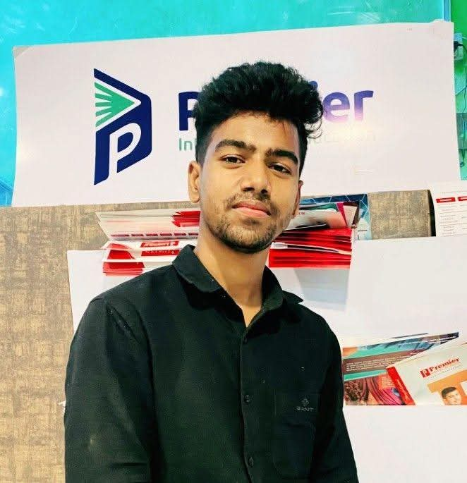

🎓
Education
Diploma in IT
IT Technician with 4 years of experience in technical support, computer hardware and software troubleshooting, networking, and IT service operations.

I am an IT professional focused on keeping devices, networks, and workplace technology running reliably. I enjoy troubleshooting technical issues, supporting users, and learning new technologies.
Diploma in IT
4 years of IT Technician experience
Practical troubleshooting, clear communication, and customer-focused technical support.
Core areas of IT support and technical service.
Professional experience and responsibilities.
Experience: 4 years (as provided)
Please verify the dates and adjust these responsibilities to match your actual work before publishing.
Add photos and details of completed work to make this section stronger.
Network connectivity checks, router configuration, and LAN/Wi-Fi troubleshooting.
System setup, software installation, hardware diagnostics, and printer troubleshooting.
Installation and maintenance support for CCTV and related security equipment.
These are example service areas, not independently verified project records. Replace or supplement them with your real projects.
Have an IT support opportunity or project? Feel free to contact me.
Check that your email address and LinkedIn profile URL are correct before publishing this page publicly.